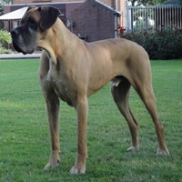

Zorba van de Maginaris
- Reu - geel - NHSB 2358164
- Geboren op 17 juli 2001
- Overleden op 16 maart 2011
Stamboom


In herinnering
Zorba was onze eerste dog. Een geweldige dog, zowel qua uiterlijk als qua karakter: elegant met een imponerend hoofd, stoer en zelfverzekerd, maar ook een aanhankelijke knuffelbeer. In de eerste jaren hebben we heel wat hondencursussen gelopen, met als eindresultaat een evenwichtige dog. Hij vergezelde ons op alle vakanties en wandeltochten. Samen hebben we in de champagnekelders in Frankrijk en bovenop de Zugspitze in Oostenrijk gestaan. Op middelbare leeftijd kreeg hij gezelschap van Ianus. Het werden de beste maatjes, met Zorba onbetwist de baas. Op zijn oude dag was de geest en levenslust nog jong, maar het lichaam wilde uiteindelijk niet meer. Een dog om nooit meer te vergeten...


